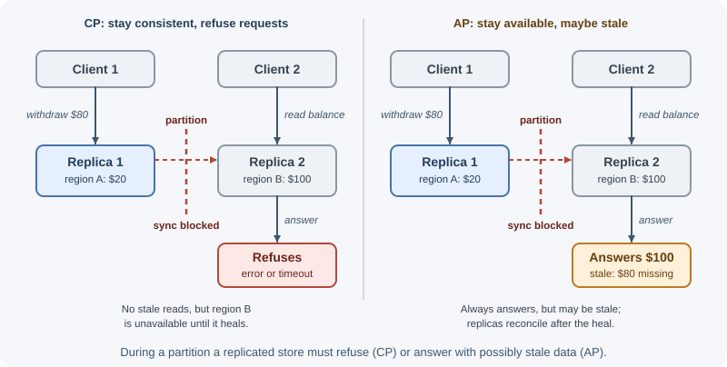
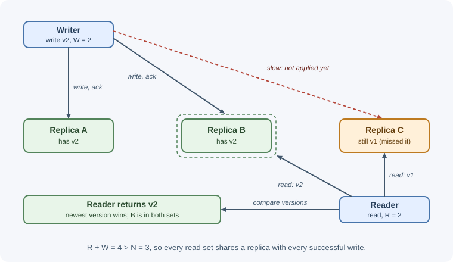

Consistency and the CAP Theorem¶
As soon as data is copied to more than one machine (for availability, for read scaling, or to be near users), the copies can disagree for a while. A consistency model describes what a reader may see while that happens. The CAP theorem explains a hard limit: when the network splits, a replicated system must choose between staying consistent and staying available. This page explains the models, the theorem, and how to choose per feature.
Why it matters¶
- Replication lag causes real bugs: a user changes their name, refreshes, and sees the old one; a comment appears before the post it replies to.
- Some data must never be inconsistent (a bank balance, the last seat on a flight, a unique username), while some can be slightly stale (a like count, a product's review summary). Using the strongest model everywhere wastes latency and availability; using the weakest everywhere causes correctness bugs.
- Databases expose these choices as settings (read and write concerns, consistency levels, read preferences). You need the concepts to configure them correctly.
- CAP is a staple of system design interviews and is often stated wrongly.
Real-world usage¶
- Amazon's always-writeable shopping cart. Amazon's CTO described Dynamo, the internal store behind services such as the shopping cart: customers must be able to view and add items to their cart even if disks fail, network routes flap, or data centers are destroyed, so the cart service must always be able to read and write. Dynamo sacrifices consistency under certain failure scenarios and uses object versioning with application-assisted conflict resolution (All Things Distributed).
- DynamoDB's per-request choice. DynamoDB reads are eventually consistent
by default; setting
ConsistentReadreturns the most up-to-date data for tables and local secondary indexes, while global secondary indexes and streams are always eventually consistent (DynamoDB documentation). - Amazon S3's strong consistency. S3 provides strong read-after-write
consistency for
PUTandDELETEof objects in all AWS Regions, so a read after a successful write returns the new object (Amazon S3 documentation). - Google Spanner's external consistency. Spanner provides external consistency, which Google describes as stronger than linearizability: the system behaves as if all transactions ran one after another. Timestamps from its TrueTime clock service also allow consistent reads across a whole database, even across regions, without blocking writes (Spanner documentation).
- Figma's multiplayer editing. Figma's real-time collaboration was informed by CRDTs. Its server defines the order of events, and when two people change the same property of the same object, the last value sent to the server wins, similar to a last-writer-wins register (Figma blog).
Popular tools and providers: strongly consistent distributed databases such as Google Spanner and CockroachDB; consensus stores such as etcd and ZooKeeper; tunable-consistency stores such as Apache Cassandra, Amazon DynamoDB, and MongoDB; CRDT libraries such as Automerge and Yjs for collaborative apps.
How it works¶
Consistency models¶
From strongest to weakest:
| Model | Guarantee | Example of what it rules out | Cost |
|---|---|---|---|
| Linearizable (strong) | Every operation appears to happen at a single instant between its start and end; once a write completes, every later read sees it | Reading an old value after someone else's write finished | Coordination on every write and read; higher latency; unavailable during partitions |
| Sequential | All clients see all operations in the same order, consistent with each client's own order (but not necessarily real time) | Two clients seeing two writes in different orders | Coordination, slightly less than linearizable |
| Causal | Operations that are causally related (a reply after the message it answers) are seen in that order by everyone; unrelated ones may appear in any order | Seeing a reply before the original message | Tracking dependencies; can stay available during partitions |
| Read-your-writes | A client always sees its own previous writes | A user not seeing the profile change they just saved | Route the user's reads carefully |
| Monotonic reads | Once a client has seen a value, it never sees an older one later | A refresh showing a newer comment list, then an older one | Stick a client to one replica, or track versions |
| Eventual | If writes stop, all replicas eventually converge to the same value | Nothing in the short term; only guarantees convergence | Cheapest, fastest, most available |
Read-your-writes and monotonic reads are session guarantees: they are about what one client sees, and are often enough to make an eventually consistent system feel correct to users.
Two different C's
The "C" in ACID means a transaction keeps the database's rules and constraints valid. The "C" in CAP means linearizability across replicas. They are unrelated.
Replication lag in practice¶
With a primary and asynchronous read replicas, writes reach replicas after a delay: usually milliseconds, sometimes seconds or minutes under load.
t=0 ms user saves name "Ana Li" -> primary: "Ana Li"
t=5 ms user's page reloads -> reads replica 2: still "Ana" (read-your-writes broken)
t=40 ms replica 2 catches up -> "Ana Li"
Other anomalies:
- Monotonic reads broken: the first refresh hits a caught-up replica (5 comments), the second hits a lagging one (3 comments).
- Causality broken: a reply is replicated to a region before the question it answers.
Common fixes:
- Read from the primary for a short time after a user writes (for example, mark the session for a few seconds), or always for the user's own data.
- Pin a session to one replica (monotonic reads).
- Track versions: the client remembers the version or timestamp of its last write, and the server reads from a replica that has caught up to it (or waits).
- Causally consistent sessions, offered by some databases (MongoDB provides them with majority read and write concerns).
The CAP theorem¶
The CAP theorem (conjectured by Eric Brewer in 2000, proved by Seth Gilbert and Nancy Lynch in 2002) concerns a replicated data store and three properties:
- C, consistency: linearizability; every read returns the most recent completed write.
- A, availability: every request received by a non-failing node gets a non-error response.
- P, partition tolerance: the system keeps operating even though the network drops or delays messages between nodes.
Stated precisely: when a network partition happens, a system must choose between consistency and availability.

Key points:
- Partitions are not optional in a distributed system; networks fail. So the real choice is between CP (consistent, may refuse requests during partitions) and AP (available, may return stale or conflicting data during partitions).
- "CA" is not a real option for a distributed system; it only describes a single node, which avoids partitions by not being distributed.
- The choice applies only during a partition. When the network is healthy, a system can be both consistent and available.
- Real systems are rarely purely one or the other: many are tunable per operation, and the CAP definitions are narrow (linearizability, and availability at every non-failing node).
Typical examples:
| Leaning | Behavior during a partition | Examples |
|---|---|---|
| CP | The minority side stops accepting writes (and often reads) | Consensus systems such as etcd and ZooKeeper; MongoDB replica sets (only a majority can elect a primary); databases using synchronous replication |
| AP | All sides keep serving; conflicts resolved later | Dynamo-style stores such as Cassandra or Riak at low consistency levels; DNS; caches |
PACELC¶
CAP says nothing about normal operation. PACELC (proposed by Daniel Abadi) extends it:
if there is a Partition (P):
choose Availability (A) or Consistency (C)
Else (E), in normal operation:
choose lower Latency (L) or Consistency (C)
The "else" part is the everyday trade-off: waiting for replicas to confirm a write (or reading from several of them) gives consistency but adds latency, especially across regions. Dynamo-style stores lean PA/EL by default; systems built on synchronous replication and consensus lean PC/EC.
Quorum reads and writes¶
Leaderless and quorum-based systems keep N copies of each item. A write waits for W replicas to acknowledge; a read queries R replicas and takes the newest value.

If R + W > N, every read set overlaps every write set in at least one replica,
so a read sees at least one copy of the latest successful write.
| N | W | R | R + W > N? | Behavior |
|---|---|---|---|---|
| 3 | 2 | 2 | Yes (4 > 3) | Balanced; tolerates one node down for both reads and writes |
| 3 | 3 | 1 | Yes (4 > 3) | Fast reads; writes fail if any replica is down |
| 3 | 1 | 3 | Yes (4 > 3) | Fast writes; reads fail if any replica is down |
| 3 | 1 | 1 | No (2 is not greater than 3) | Fastest and most available; reads may be stale (eventual) |
Cassandra exposes this as consistency levels per query, such as ONE,
QUORUM (a majority of replicas), LOCAL_QUORUM (a majority within the
local data center), and ALL.
Caveats: quorums do not by themselves give linearizability. Concurrent writes, writes that partly succeed and then fail, and "sloppy" quorums that accept writes on substitute nodes during failures can all still produce anomalies.
Conflict resolution¶
When replicas accept writes independently (AP systems, multi-leader or offline-first setups), the same item can be changed in two places. The system must merge the versions:
- Last-write-wins (LWW): keep the version with the latest timestamp. Simple, but clocks on different machines drift, and the "losing" write is silently discarded.
- Version vectors / vector clocks: each replica tracks a counter per replica, which lets the system detect whether two versions are ordered or truly concurrent. Concurrent versions ("siblings") are kept and merged by the application or the user.
- CRDTs (conflict-free replicated data types): data structures such as counters, sets, and sequences designed so that concurrent updates always merge to the same result in any order. Used in collaborative editors and some databases.
- Application-level merge: business rules decide, for example "union of shopping cart items" or "flag for manual review".
The best conflict is the one you avoid: route all writes for an item to one place (a single leader or a home region per user) when you can.
Consensus¶
Strong consistency across replicas relies on consensus algorithms such as Raft and Paxos. A majority of nodes must agree on each change, so a cluster of 2f + 1 nodes tolerates f failures (3 nodes tolerate 1, 5 tolerate 2). A minority partition cannot make progress, which is exactly the CP choice. etcd, ZooKeeper, Kafka's KRaft controllers, and RabbitMQ quorum queues use this approach.
Choosing per feature¶
| Feature | Needs | Why |
|---|---|---|
| Account balance, payments, inventory decrements | Strong (or serialized through one leader/transaction) | A stale read allows overspending or overselling |
| Unique usernames or emails | Strong uniqueness check | Two users must not claim the same name |
| A user editing their own profile or settings | Read-your-writes | They must see their own change; others can lag |
| Comments and chat | Causal | Replies must not appear before what they answer |
| Social feeds, like and view counts | Eventual | Slight staleness is invisible and cheap |
| Product catalog, search index | Eventual (seconds to minutes) | Updated in the background |
| Analytics dashboards | Eventual (minutes or more) | Approximate and delayed is fine |
One system often mixes models: strong consistency for the order and payment, eventual consistency for the "recently viewed" list on the same page.
When to use and when not to use¶
| Model | Use when | Avoid when |
|---|---|---|
| Strong (linearizable, or one leader + transactions) | Money, inventory, bookings, uniqueness, permissions changes that must apply immediately | Data is read globally at high volume and slight staleness is harmless; cross-region writes make every request slow |
| Session guarantees (read-your-writes, monotonic reads) | Users editing their own data on top of replicas or caches | Other users must also see the change immediately (needs strong) |
| Causal | Comments, chat, collaborative content where replies must follow what they answer | Simple key-value data with no relationships between writes |
| Eventual | Feeds, counters, analytics, search indexes, caches, recommendations | A stale read can cause loss, overselling, security problems, or duplicates |
Strong consistency is not free: it adds latency (waiting for a majority or a leader), reduces availability during partitions, and makes multi-region writes slow. Eventual consistency is not free either: you must handle staleness in the UI and resolve conflicts. Choose per feature, and default to the weakest model that is still correct for the business.
Practical examples¶
Read-your-writes with a replica router¶
// After a user writes, send their reads to the primary for a short window
const STICKY_MS = 5_000;
const lastWriteAt = new Map(); // userId -> timestamp (use Redis when running many instances)
export function recordWrite(userId) {
lastWriteAt.set(userId, Date.now());
}
export function poolForRead(userId, { primary, replica }) {
const wroteRecently = Date.now() - (lastWriteAt.get(userId) ?? 0) < STICKY_MS;
return wroteRecently ? primary : replica;
}
// In a handler
app.patch("/api/me", async (req, res) => {
const user = await pools.primary.query("UPDATE users SET name = $1 WHERE id = $2 RETURNING *",
[req.body.name, req.user.id]);
recordWrite(req.user.id);
res.json(user.rows[0]);
});
app.get("/api/me", async (req, res) => {
const pool = poolForRead(req.user.id, pools);
const user = await pool.query("SELECT * FROM users WHERE id = $1", [req.user.id]);
res.json(user.rows[0]);
});
Tunable consistency in MongoDB¶
import { MongoClient } from "mongodb";
const client = new MongoClient(process.env.MONGODB_URI);
const orders = client.db("shop").collection("orders");
// Acknowledged only after a majority of replica set members have the write
await orders.insertOne({ _id: "ord_901", status: "paid" }, { writeConcern: { w: "majority" } });
// Read only data that a majority has acknowledged (it cannot be rolled back)
const doc = await orders.findOne({ _id: "ord_901" }, { readConcern: { level: "majority" } });
// Causally consistent session: this session's reads observe its own earlier writes,
// even when reading from secondaries
const session = client.startSession({ causalConsistency: true });
try {
await orders.updateOne({ _id: "ord_901" }, { $set: { status: "shipped" } },
{ session, writeConcern: { w: "majority" } });
const fresh = await orders.findOne({ _id: "ord_901" },
{ session, readConcern: { level: "majority" }, readPreference: "secondary" });
console.log(fresh.status); // "shipped"
} finally {
await session.endSession();
}
See MongoDB read and write concerns.
Quorum check¶
function quorumInfo(n, w, r) {
return {
overlapping: r + w > n, // reads see the latest successful write
writeToleratesDown: n - w, // replicas that can be down while writes succeed
readToleratesDown: n - r,
};
}
console.log(quorumInfo(3, 2, 2)); // { overlapping: true, writeToleratesDown: 1, readToleratesDown: 1 }
console.log(quorumInfo(5, 3, 3)); // tolerates 2 down for both
Best practices¶
- Decide consistency per feature, starting from what a stale read would cost the business.
- Give users read-your-writes on their own data even in eventually consistent systems.
- Use strong consistency (or one leader and a transaction) for money, inventory, and uniqueness.
- Prefer avoiding conflicts (single leader per item) over resolving them.
- Measure replication lag and alert on it.
- Use majority write concerns and quorums for data you cannot lose.
- Be precise about CAP: it is a choice during partitions, not a menu of "pick two".
- Document the guarantees your API provides, so clients do not assume more.
In production¶
- "My change disappeared." Detect: support tickets right after edits; the replica-lag metric (seconds behind the primary) is above zero when they happen. Cause: reads routed to asynchronous replicas immediately after a write. Fix: read-your-writes routing (primary for a window after writes, or version tracking) or causally consistent sessions.
- Replica lag spikes during batch jobs. Detect: lag alerts every night at the same time; stale data in the morning. Cause: a large bulk update or long transaction that replicas must replay. Fix: chunk and throttle batch jobs, and avoid routing latency-sensitive reads to lagging replicas.
- Updates silently revert. Detect: users report values jumping back; NTP clock-offset alerts on some hosts. Cause: last-write-wins with skewed clocks, so an older write with a later timestamp wins. Fix: conditional updates with versions (compare-and-set), or a single writer per item.
- Writes fail during a network incident. Detect: errors such as
"not writable primary" from MongoDB, or timeouts waiting for
w: "majority". Cause: the primary lost contact with the majority, so the system chose consistency. Fix: expected CP behavior; spread replicas across three zones so a single failure keeps a majority, and use retryable writes. - Duplicate usernames appear. Detect: a reconciliation query finds two accounts with the same name. Cause: "check, then insert" against a replica or without a constraint. Fix: a unique index enforced on the primary, and handle the duplicate-key error.
Important terminology¶
- Consistency model: the rules about what values reads may return.
- Linearizability: operations appear to take effect instantly, in real-time order; the strongest single-object model.
- Causal consistency: causally related operations are seen in order by everyone.
- Read-your-writes / monotonic reads: session guarantees about a client's own view.
- Eventual consistency: replicas converge if writes stop.
- Replication lag: the delay before a replica reflects a write.
- Network partition: nodes cannot communicate with each other.
- CAP theorem: during a partition, choose consistency or availability.
- PACELC: without a partition, choose latency or consistency.
- Quorum: the number of replicas that must take part in a read or write.
- Last-write-wins: keep the version with the latest timestamp.
- Vector clock: per-replica counters for detecting concurrent updates.
- CRDT: a data type whose concurrent updates always merge consistently.
- Consensus: agreement among a majority of nodes (Raft, Paxos).
Common mistakes and misconceptions¶
- "Pick any two of C, A, and P." Partitions are a fact; the choice is C or A during them.
- Calling a single-node database "CA" as if it solved the distributed problem.
- Confusing ACID consistency with CAP consistency.
- "Eventual consistency means data might be wrong forever." It converges; the question is how fast and what users see meanwhile.
- Reading from replicas right after writing and treating the stale result as a bug in the database.
- Trusting last-write-wins with unsynchronized clocks, silently dropping writes.
- Assuming R + W > N gives full linearizability in all failure cases.
- Using one consistency level for everything.
Revision questions¶
- Order these from strongest to weakest: eventual, linearizable, causal, read-your-writes. Give an anomaly that each stronger model prevents.
- State the CAP theorem precisely. Why is "CA" not a meaningful choice for a distributed database?
- What does PACELC add to CAP?
- With N = 5, which values of W and R guarantee overlapping quorums while tolerating two failed replicas for both reads and writes?
- A user updates their profile and the page shows the old data. Explain the cause and two ways to fix it.
- Which consistency level would you choose for a wallet balance, a like counter, and a chat thread, and why?
Further learning¶
- Jepsen: Consistency models, a map of models and their relationships.
- Amazon: Dynamo: Amazon's Highly Available Key-value Store, the paper behind quorum-based, eventually consistent stores.
- MongoDB: Read concern and causal consistency.
- AWS: DynamoDB read consistency.
- Related: database scaling and MongoDB replication.